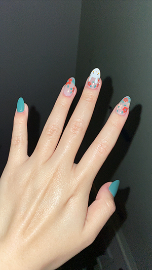

Bunny in a flower patch - June 2, 2021
These were my very first nails. I was mesmerized after they were finished, which led me to continue getting my nails done for the next two years. I saw these cute nails on “little Red book”, the equivalent of Pinterest in China. I love sage green and bunnies, so these nails were the perfect combination of both!